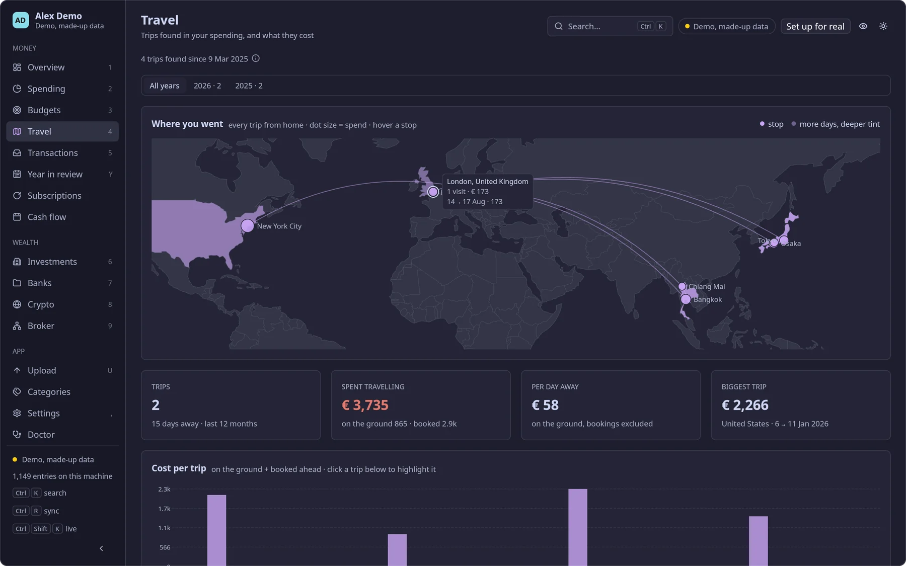

Local-first personal finance
Your money,all in one place.
Bank accounts, cards, brokers and crypto in one net-worth view, in one fast app, on your own server. Native desktop, web and phone. Open source, written in Rust.
- Self-hosted
- Encrypted at rest
- Read-only API keys


What it does
Every account, one view.
Anser brings your accounts into one net-worth view in your base currency, with spending, budgets, subscriptions, travel, cash flow and investment pages on top. Exported statements go in by drag and drop; exchanges and brokers sync over read-only APIs.
Banks and cards Statements
- N26
- HSBC
- Revolut
- Mox
Plus any bank with a table-shaped export, through a format definition you map once on the Upload page.
Brokers Investments
- Interactive Brokers
- HSBC FlexInvest
IBKR through its Flex Web Service, a reporting token that cannot trade. Broker cash and positions, marked to the best price available.
Crypto Exchanges, wallet
- Binance
- OKX
- Trezor cold wallet
Live exchange balances over signed read-only APIs; the cold wallet from its exported history.
The pages
- Net worth
- Spending
- Budgets
- Subscriptions
- Travel
- Cash flow
- Investments
History is a monthly balance sheet in your base currency at monthly FX; now is live balances and positions. Money owed to you counts in net worth. Offline, every page falls back to the last snapshot with a stale badge.

How it works
Your server, your devices.
Anser runs on a server you own, on your tailnet, and on your own devices. The only outbound calls are read-only: exchange and broker APIs, FX rates and market closes. Nothing is uploaded anywhere else.
-
Your server
Any Linux box: a Raspberry Pi, a home server, a small VPS.
anser-serverkeeps one SQLite database per user, ingests statements, runs the syncs and the valuation, and is published to your tailnet withtailscale serve. -
Desktop, web and phone
A native desktop app built on GPUI, and the same pages compiled to WebAssembly, served by your server and installable on a phone as a PWA.
-
Works offline
The desktop opens instantly from a local replica, optionally encrypted, and syncs in the background. No network, no problem: it shows the last snapshot.
-
Ask your assistant
Over MCP, Claude, Cursor or Codex can read your numbers through eight read-only tools. Off until you switch it on, opened only by an MCP key, on your tailnet only.
Install
One line, no sudo.
On Linux, from the latest GitHub Release. Checksums are verified against SHA256SUMS.
The desktop app, talking to your server elsewhere on your tailnet
$ curl -fsSL https://raw.githubusercontent.com/lucianosrp/anser/main/install.sh | shThe server, anser-server (x86_64 or aarch64)
$ curl -fsSL https://raw.githubusercontent.com/lucianosrp/anser/main/install.sh | sh -s -- --serverBoth on one machine: the app starts and stops a local server itself
$ curl -fsSL https://raw.githubusercontent.com/lucianosrp/anser/main/install.sh | sh -s -- --bothA specific tag
$ FINANCE_VERSION=v0.1.0 sh install.sh --serverPrivacy and security
It watches the money. It never touches it.
Self-hosted
Your data lives on your server and your devices. The server stays on your tailnet, never on the public internet. Each person in a household gets their own database, sources and keys.
Encrypted at rest
API keys in an encrypted store on the server, nightly backups as encrypted archives sealed to a key only your laptop holds, and an optional encrypted local copy on the desktop.
Read-only API keys
Every key is tested by the server, and one that can trade, withdraw or transfer is refused.
Never moves money
Nothing in Anser places a trade, moves funds or pays anyone. It is a record-keeping tool, not financial advice.
The name
Anser is Latin for goose. By tradition, the sacred geese kept by the temple of Juno Moneta on the Capitol woke Rome to a night attack, and the mint that later stood in that temple gave us the words money and mint. Like those geese, the app watches over the money and raises the alarm.